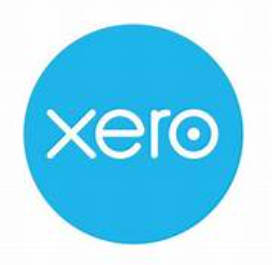
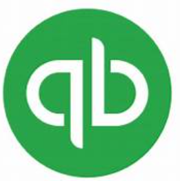
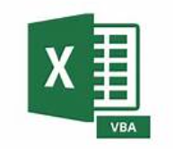
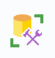
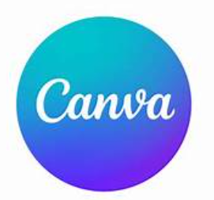
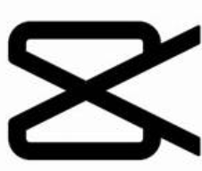
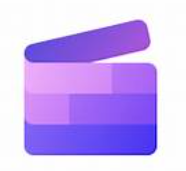

Showcasing the technical tools and transferable skills I developed during my Polytechnic studies

Xero — I had a regular hands-on learning experience with using Xero during my Accounting Internship at RSM. I am confident with data entry, bank reconciliation, updating FX Rates, extracting financial reports, & updating manual Journal Entries using Xero.

QuickBooks — During my Accounting Internship, I have keyed in invoices, and have recorded bank transfers in differing currencies (e.g. SGD to USD).
Microsoft Power BI — I am confident with using Microsoft Power BI to transform raw data into interactive dashboards and actionable insights.
KNIME — I am confident with designing workflows for data cleaning, integration, and reporting to support efficient analysis and decision-making

Microsoft Excel VBA — I had hands-on learning experience with using Excel VBA during my studies in Singapore Polytechnic. This was further reinforced during my Internship, where I initiated to work on a VBA Automation Project to streamline the repetitive bank import file preparation process for the team.
UiPath — I had an enriching learning experience with using Robotic Process Automation (RPA) on UiPath in my first year. This was further reinforced through my Client Project in my third year, where my team worked collaborated with StarsBridge Accounting to automate their repetitive business processes.
Python — In my first year, as part of a graded project, my team of 3 built a scientific calculator together using Python, which mimicked the mathematical functions on a typical scientific calculator. It was complex & required us to dive deep into research during the development phase.

SQL — I am confident with using SQL to look up transaction records, modify existing data, organize & summarize transaction records.
SingTax — I had learning experience with using SingTax Corporate 2024 to calculate tax, and e-filing duirng my 2nd year at Singapore Polytechnic.
Minitab — I had learning experience with using Minitab Statistics to generate descriptive statistics, generate graphs & charts, compute regression & correlation, perform t-tests and ANOVA to draw meaningful business insights for decision-making.
ABSS Premier — I Had experience with keying in journal entries using ABSS Premier in my first year.

Canva — In various group projects in Polytechnic, I had experience using Canva to design slides, adding slide and elemental animations, creating visuals through layering & transparency, & incorporate music into the slides.

CapCut — When editing my internship video presentation, I used CapCut to import media, adjust audio levels, and incorporate transitions and visual elements to enhance clarity and engagement, resulting in a professional presentation delivered.

ClipChamp — I am confident with adding visuals, animations, transitions, & music into videos using ClipChamp, to enhance presentation quality.